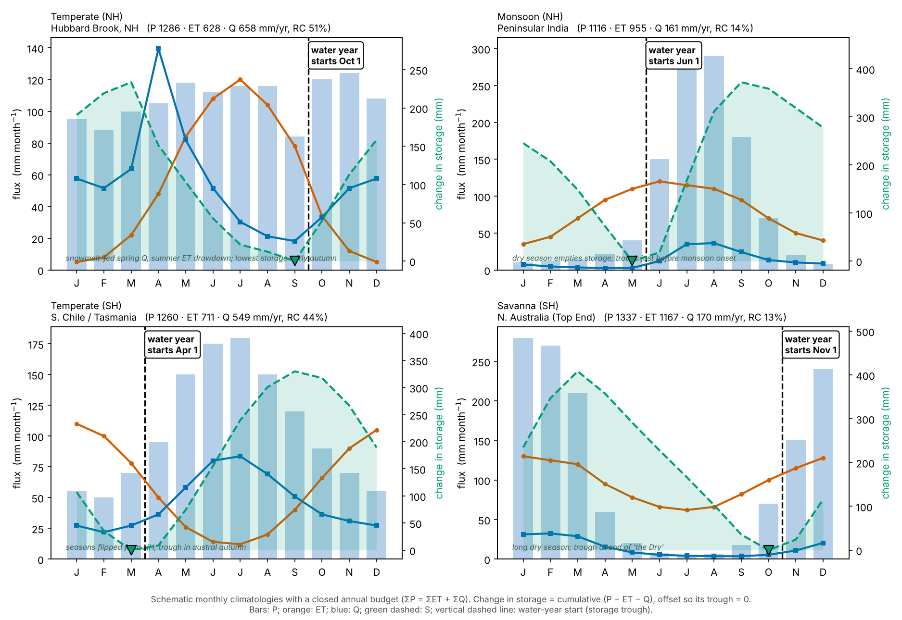
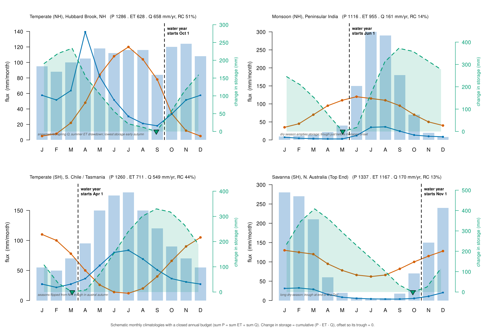
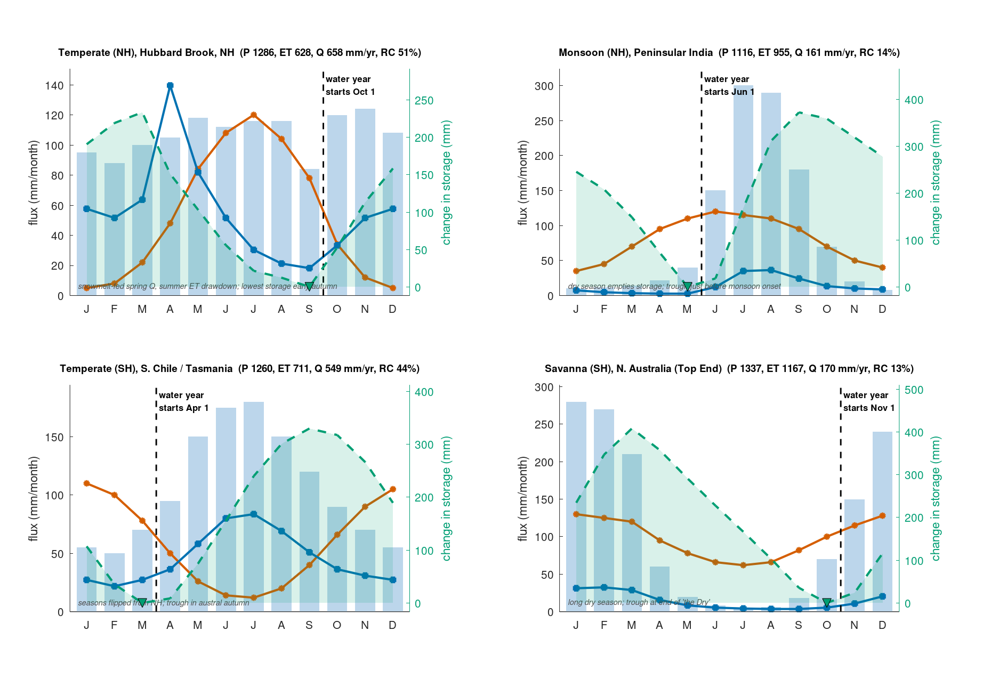

Chapter 2 · Watersheds and the Water Budget
Monthly P, ET, Q and change in storage in four climates (Figure 2.7)
Schematic monthly climatologies for four climates, with storage trough defining the water-year start.
Source: Chapter 2 draft; author data arrays from the code comment (truncated at Word's 2048-character comment limit); plotting completed from the figure in the draft
No external data file: values are small and embedded in the code.

Code: water_budget_four_climates.py · image: figure_python.png

"""Monthly P, ET, Q and change in storage in four climates (Figure 2.7)
Chapter 2 draft; author data arrays from the code comment (truncated at Word's 2048-character comment limit); plotting completed from the figure in the draft
Run: python3 water_budget_four_climates.py -> figure_python.png"""
import numpy as np, matplotlib
matplotlib.use("Agg"); import matplotlib.pyplot as plt
months = list("JFMAMJJASOND")
climates = [
("Temperate (NH)", "Hubbard Brook, NH", [95,88,100,105,118,112,116,116,84,120,124,108], [5,8,22,48,84,108,120,104,78,34,12,5],
[0.95,0.85,1.05,2.30,1.35,0.85,0.5,0.35,0.30,0.55,0.85,0.95], "snowmelt-fed spring Q, summer ET drawdown; lowest storage early autumn"),
("Monsoon (NH)", "Peninsular India", [10,12,14,22,40,150,300,290,180,70,20,8], [35,45,70,95,110,120,115,110,95,70,50,40],
[0.55,0.35,0.25,0.2,0.2,0.9,2.6,2.7,1.8,1.0,0.75,0.65], "dry season empties storage; trough just before monsoon onset"),
("Temperate (SH)", "S. Chile / Tasmania", [55,50,70,95,150,175,180,150,120,90,70,55], [110,100,78,50,26,14,12,20,40,66,90,105],
[0.75,0.6,0.75,1.0,1.6,2.2,2.3,1.9,1.4,1.0,0.85,0.75], "seasons flipped from NH; trough in austral autumn"),
("Savanna (SH)", "N. Australia (Top End)", [280,270,210,60,20,8,5,6,18,70,150,240], [130,125,120,95,78,66,62,66,82,100,115,128],
[2.6,2.7,2.4,1.3,0.7,0.45,0.35,0.3,0.3,0.45,0.9,1.7], "long dry season; trough at end of 'the Dry'"),
]
mfull = ["Jan","Feb","Mar","Apr","May","Jun","Jul","Aug","Sep","Oct","Nov","Dec"]
C_P, C_ET, C_Q, C_S = "#78A9D6", "#D55E00", "#0072B2", "#009E73"
x = np.arange(12)
fig, axes = plt.subplots(2, 2, figsize=(12.5, 8.6))
for ax, (name, place, P, ET, Qs, note) in zip(axes.flat, climates):
P, ET, Qs = map(lambda v: np.array(v, float), (P, ET, Qs))
Q = Qs * ((P.sum() - ET.sum()) / Qs.sum()) # scale Q so the annual budget closes (sum P = sum ET + sum Q)
cs = np.cumsum(P - ET - Q); S = cs - cs.min() # change in storage, offset so its trough = 0
trough = int(np.argmin(cs)); wy = (trough + 1) % 12 # water year starts the month after the storage trough
ax.bar(x, P, width=0.72, color=C_P, alpha=0.55, label="P", zorder=1)
ax.plot(x, ET, "-o", color=C_ET, lw=2, ms=3.5, label="ET", zorder=3)
ax.plot(x, Q, "-s", color=C_Q, lw=2, ms=3.5, label="Q", zorder=3)
ax.set_xticks(x); ax.set_xticklabels(months); ax.set_ylabel("flux (mm month$^{-1}$)")
ax2 = ax.twinx(); ax2.fill_between(x, 0, S, color=C_S, alpha=0.15, lw=0); ax2.plot(x, S, "--", color=C_S, lw=2, label="S")
ax2.plot(trough, 0, "v", color=C_S, mec="k", ms=10); ax2.set_ylabel("change in storage (mm)", color=C_S); ax2.set_ylim(-0.05 * S.max(), S.max() * 1.25)
ax.axvline(wy - 0.5, color="k", ls="--", lw=1.6)
ax.text(wy - 0.4, ax.get_ylim()[1] * 0.97, f"water year\nstarts {mfull[wy]} 1", va="top", fontsize=9, fontweight="bold", bbox=dict(boxstyle="round", fc="w"))
ax.text(-0.4, ax.get_ylim()[1] * 0.04, note, fontsize=7.5, style="italic", color="0.3")
ax.set_title(f"{name}\n{place} (P {P.sum():.0f} · ET {ET.sum():.0f} · Q {Q.sum():.0f} mm/yr, RC {100 * Q.sum() / P.sum():.0f}%)", loc="left", fontsize=9.5)
fig.text(0.5, 0.012, "Schematic monthly climatologies with a closed annual budget (ΣP = ΣET + ΣQ). Change in storage = cumulative (P − ET − Q), offset so its trough = 0.\nBars: P; orange: ET; blue: Q; green dashed: S; vertical dashed line: water-year start (storage trough).", ha="center", fontsize=8.5, color="0.3")
fig.tight_layout(rect=(0, 0.05, 1, 1)); fig.savefig("figure_python.png", dpi=150)

Code: water_budget_four_climates.R · image: figure_r.png

# Monthly P, ET, Q and change in storage in four climates (Figure 2.7)
# Chapter 2 draft; author data arrays from the code comment (truncated at Word's 2048-character comment limit); plotting completed from the figure in the draft
# Run: Rscript water_budget_four_climates.R -> figure_r.png (base R, no packages)
months <- strsplit("JFMAMJJASOND", "")[[1]]; mfull <- month.abb
climates <- list(
list(name = "Temperate (NH)", place = "Hubbard Brook, NH", P = c(95,88,100,105,118,112,116,116,84,120,124,108), ET = c(5,8,22,48,84,108,120,104,78,34,12,5), Q = c(0.95,0.85,1.05,2.3,1.35,0.85,0.5,0.35,0.3,0.55,0.85,0.95), note = "snowmelt-fed spring Q, summer ET drawdown; lowest storage early autumn"),
list(name = "Monsoon (NH)", place = "Peninsular India", P = c(10,12,14,22,40,150,300,290,180,70,20,8), ET = c(35,45,70,95,110,120,115,110,95,70,50,40), Q = c(0.55,0.35,0.25,0.2,0.2,0.9,2.6,2.7,1.8,1.0,0.75,0.65), note = "dry season empties storage; trough just before monsoon onset"),
list(name = "Temperate (SH)", place = "S. Chile / Tasmania", P = c(55,50,70,95,150,175,180,150,120,90,70,55), ET = c(110,100,78,50,26,14,12,20,40,66,90,105), Q = c(0.75,0.6,0.75,1.0,1.6,2.2,2.3,1.9,1.4,1.0,0.85,0.75), note = "seasons flipped from NH; trough in austral autumn"),
list(name = "Savanna (SH)", place = "N. Australia (Top End)", P = c(280,270,210,60,20,8,5,6,18,70,150,240), ET = c(130,125,120,95,78,66,62,66,82,100,115,128), Q = c(2.6,2.7,2.4,1.3,0.7,0.45,0.35,0.3,0.3,0.45,0.9,1.7), note = "long dry season; trough at end of 'the Dry'"))
png("figure_r.png", width = 1875, height = 1290, res = 150)
par(mfrow = c(2, 2), mar = c(3.2, 4.6, 3.6, 4.6), las = 1, oma = c(2, 0, 0, 0))
for (cl in climates) {
P <- cl$P; ET <- cl$ET; Q <- cl$Q * ((sum(P) - sum(ET)) / sum(cl$Q))
cs <- cumsum(P - ET - Q); S <- cs - min(cs); trough <- which.min(cs); wy <- trough %% 12 + 1 # water year starts month after trough
ytop <- max(P, ET, Q) * 1.08
bp <- barplot(P, col = adjustcolor("#78A9D6", 0.55), border = NA, names.arg = months, ylim = c(0, ytop), ylab = "flux (mm/month)", space = 0.28)
lines(bp, ET, type = "o", col = "#D55E00", lwd = 2, pch = 19, cex = 0.7); lines(bp, Q, type = "o", col = "#0072B2", lwd = 2, pch = 15, cex = 0.7)
abline(v = (bp[wy] + bp[(wy + 10) %% 12 + 1]) / 2 + ifelse(wy == 1, 6.5, 0) * 0, lty = 2, lwd = 1.6)
text(bp[wy] - 0.4, ytop * 0.97, sprintf("water year\nstarts %s 1", mfull[wy]), adj = c(0, 1), font = 2, cex = 0.75)
text(bp[1] - 0.4, ytop * 0.04, cl$note, adj = c(0, 0), font = 3, cex = 0.6, col = "grey30")
mtext(sprintf("%s, %s (P %.0f . ET %.0f . Q %.0f mm/yr, RC %.0f%%)", cl$name, cl$place, sum(P), sum(ET), sum(Q), 100 * sum(Q) / sum(P)), side = 3, adj = 0, line = 0.6, cex = 0.7)
par(new = TRUE); plot(bp, S, type = "n", axes = FALSE, xlab = "", ylab = "", ylim = c(-0.05 * max(S), max(S) * 1.25), xlim = range(bp) + c(-0.7, 0.7))
polygon(c(bp, rev(bp)), c(S, rep(0, 12)), col = adjustcolor("#009E73", 0.15), border = NA); lines(bp, S, lty = 2, lwd = 2, col = "#009E73")
points(bp[trough], 0, pch = 25, bg = "#009E73", cex = 1.6); axis(4, col.axis = "#009E73", col = "#009E73"); mtext("change in storage (mm)", side = 4, line = 3, col = "#009E73", cex = 0.7, las = 0)
}
mtext("Schematic monthly climatologies with a closed annual budget (sum P = sum ET + sum Q). Change in storage = cumulative (P - ET - Q), offset so its trough = 0.", side = 1, outer = TRUE, cex = 0.6, col = "grey30")
invisible(dev.off())

Code: water_budget_four_climates.m · image: figure_matlab.png

% Monthly P, ET, Q and change in storage in four climates (Figure 2.7)
% Chapter 2 draft; author data arrays from the code comment (truncated at Word's 2048-character comment limit); plotting completed from the figure in the draft
% Run: run water_budget_four_climates.m -> figure_matlab.png (MATLAB or GNU Octave)
clear; close all;
months = 'JFMAMJJASOND'; mfull = {'Jan','Feb','Mar','Apr','May','Jun','Jul','Aug','Sep','Oct','Nov','Dec'};
cl = struct('name', {}, 'place', {}, 'P', {}, 'ET', {}, 'Q', {}, 'note', {});
cl(1) = struct('name', 'Temperate (NH)', 'place', 'Hubbard Brook, NH', 'P', [95 88 100 105 118 112 116 116 84 120 124 108], 'ET', [5 8 22 48 84 108 120 104 78 34 12 5], 'Q', [0.95 0.85 1.05 2.3 1.35 0.85 0.5 0.35 0.3 0.55 0.85 0.95], 'note', 'snowmelt-fed spring Q, summer ET drawdown; lowest storage early autumn');
cl(2) = struct('name', 'Monsoon (NH)', 'place', 'Peninsular India', 'P', [10 12 14 22 40 150 300 290 180 70 20 8], 'ET', [35 45 70 95 110 120 115 110 95 70 50 40], 'Q', [0.55 0.35 0.25 0.2 0.2 0.9 2.6 2.7 1.8 1.0 0.75 0.65], 'note', 'dry season empties storage; trough just before monsoon onset');
cl(3) = struct('name', 'Temperate (SH)', 'place', 'S. Chile / Tasmania', 'P', [55 50 70 95 150 175 180 150 120 90 70 55], 'ET', [110 100 78 50 26 14 12 20 40 66 90 105], 'Q', [0.75 0.6 0.75 1.0 1.6 2.2 2.3 1.9 1.4 1.0 0.85 0.75], 'note', 'seasons flipped from NH; trough in austral autumn');
cl(4) = struct('name', 'Savanna (SH)', 'place', 'N. Australia (Top End)', 'P', [280 270 210 60 20 8 5 6 18 70 150 240], 'ET', [130 125 120 95 78 66 62 66 82 100 115 128], 'Q', [2.6 2.7 2.4 1.3 0.7 0.45 0.35 0.3 0.3 0.45 0.9 1.7], 'note', 'long dry season; trough at end of ''the Dry''');
figure('Visible', 'off', 'Position', [100 100 1250 860], 'Color', 'w');
x = 1:12;
for i = 1:4
P = cl(i).P; ET = cl(i).ET; Q = cl(i).Q * ((sum(P) - sum(ET)) / sum(cl(i).Q));
cs = cumsum(P - ET - Q); S = cs - min(cs); [~, trough] = min(cs); wy = mod(trough, 12) + 1;
ytop = max([P ET Q]) * 1.08;
pos = [0.07 + 0.49 * mod(i - 1, 2), 0.57 - 0.46 * (i > 2) + 0.0, 0.34, 0.33];
ax1 = axes('Position', pos); hold on;
for k = 1:12, patch('XData', [k-0.36 k+0.36 k+0.36 k-0.36]', 'YData', [0 0 P(k) P(k)]', 'FaceColor', [0.737 0.84 0.92], 'EdgeColor', 'none'); end
plot(x, ET, '-o', 'Color', [0.835 0.369 0], 'LineWidth', 2, 'MarkerSize', 4, 'MarkerFaceColor', [0.835 0.369 0]);
plot(x, Q, '-s', 'Color', [0 0.447 0.698], 'LineWidth', 2, 'MarkerSize', 4, 'MarkerFaceColor', [0 0.447 0.698]);
plot([wy - 0.5 wy - 0.5], [0 ytop], 'k--', 'LineWidth', 1.4);
text(wy - 0.4, ytop * 0.97, sprintf('water year\nstarts %s 1', mfull{wy}), 'FontWeight', 'bold', 'FontSize', 8, 'VerticalAlignment', 'top');
text(0.7, ytop * 0.04, cl(i).note, 'FontAngle', 'italic', 'FontSize', 7, 'Color', [0.3 0.3 0.3]);
set(ax1, 'XTick', x, 'XTickLabel', num2cell(months), 'Box', 'off'); xlim([0.4 12.6]); ylim([0 ytop]); ylabel('flux (mm/month)');
title(sprintf('%s, %s (P %.0f, ET %.0f, Q %.0f mm/yr, RC %.0f%%)', cl(i).name, cl(i).place, sum(P), sum(ET), sum(Q), 100 * sum(Q) / sum(P)), 'FontSize', 9);
ax2 = axes('Position', pos, 'Color', 'none', 'YAxisLocation', 'right', 'XTick', [], 'Box', 'off'); hold on;
patch('XData', [x fliplr(x)]', 'YData', [S zeros(1, 12)]', 'FaceColor', [0 0.62 0.451], 'FaceAlpha', 0.15, 'EdgeColor', 'none');
plot(x, S, '--', 'Color', [0 0.62 0.451], 'LineWidth', 2); plot(trough, 0, 'v', 'MarkerFaceColor', [0 0.62 0.451], 'MarkerEdgeColor', 'k', 'MarkerSize', 8);
xlim([0.4 12.6]); ylim([-0.05 * max(S) max(S) * 1.25]); ylabel('change in storage (mm)'); set(ax2, 'YColor', [0 0.62 0.451]);
end
print('-dpng', '-r150', 'figure_matlab.png');